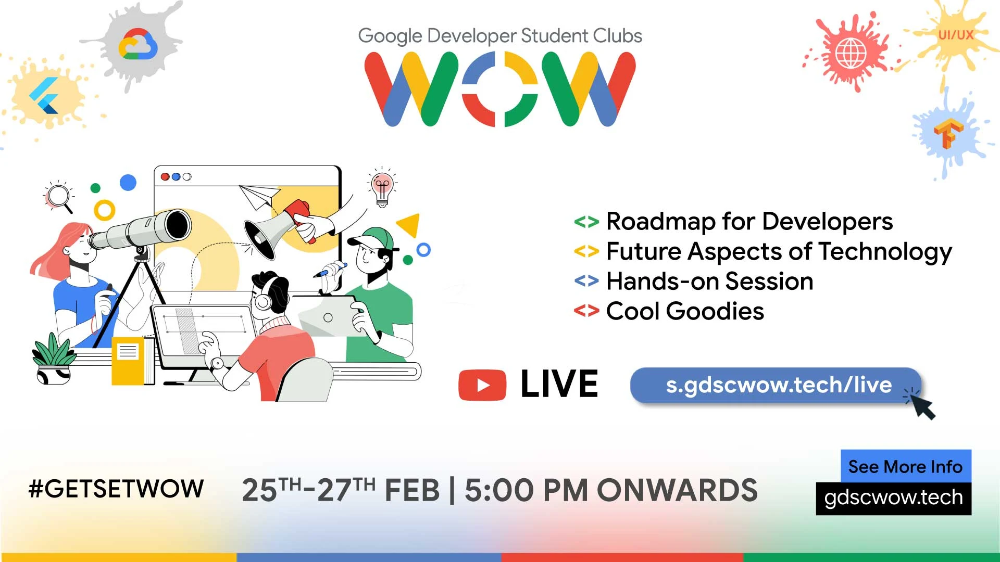
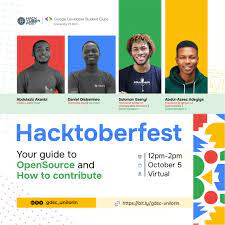

WOW
Google Developer Student Club Leads are passionate leaders at their universities who are dedicated to helping their peers learn and connect. These Leads may be pursuing various undergraduate or graduate university degrees, but have good foundational knowledge of software development concepts.Google Developer Student Club (GDSC) is a Google Developers program for university students to learn mobile and web development skills. The club will be open to any student, ranging from novice developers who are just starting, to advanced developers who want to further their skills. The club is intended as a space for students to try out new ideas and collaborate to solve mobile and web development problems.
Tech Talks

Through GDSC, we want to foster the ability of giving back to the society with the help of technology. It is a club where we learn and create innovative stuff together with other inquisitive developers and exhilarate everyone to their core. The motive is to create an ideal environment for learners in and around the campus.
Hacktober Fest
Google Developer Student Club Leads are passionate leaders at their universities who are dedicated to helping their peers learn and connect. These Leads may be pursuing various undergraduate or graduate university degrees, but have good foundational knowledge of software development concepts.Google Developer Student Club (GDSC) is a Google Developers program for university students to learn mobile and web development skills. The club will be open to any student, ranging from novice developers who are just starting, to advanced developers who want to further their skills. The club is intended as a space for students to try out new ideas and collaborate to solve mobile and web development problems.
